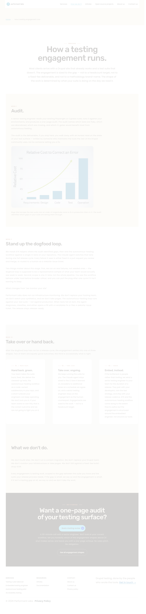
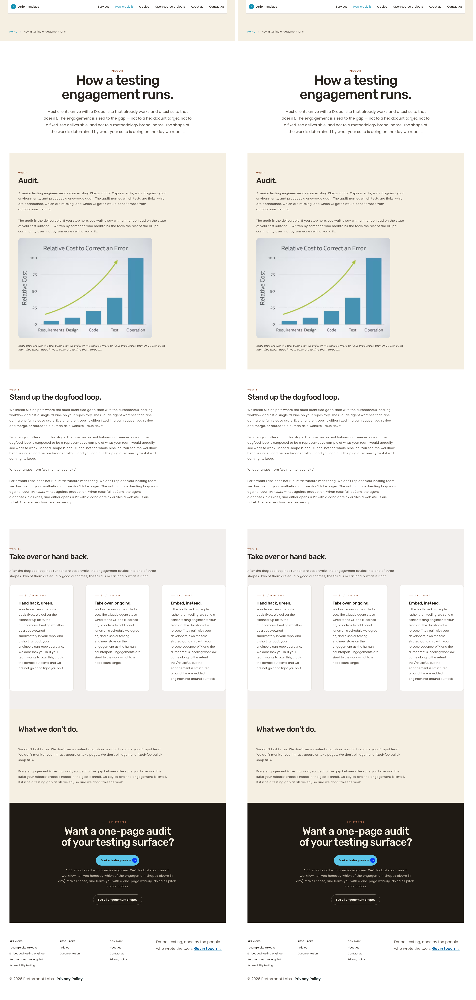
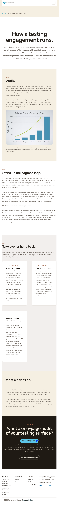
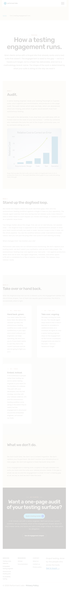
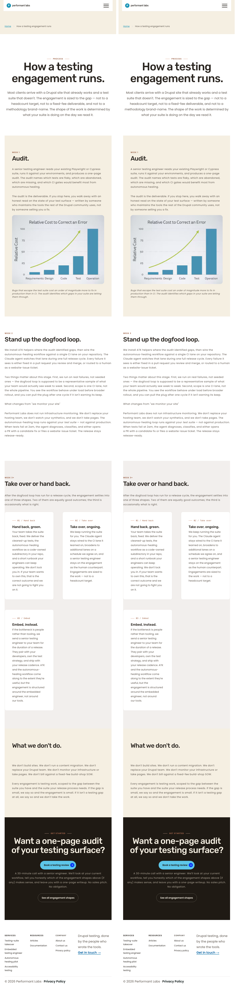
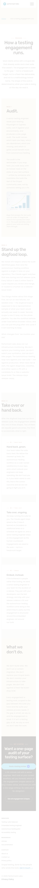
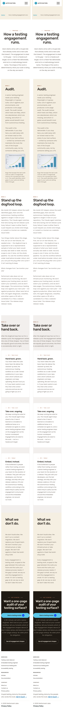
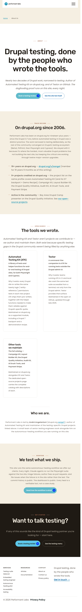
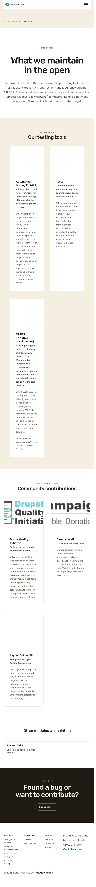

BASELINE (left)LIVE (right)
aa/pl-sprint-10-cycle-2b3-how-we-do-it · 2026-05-12 · autonomous modeNo visible differences detected at any viewport on any page. The refactor (canvas marker classes dy-section--kicker-inline ×3 and dy-section--tight-header ×1 on /how-we-do-it, plus the two CSS selector rewrites in dy-section.css) is pixel-identical to the pre-refactor shipped state on /how-we-do-it and on every cross-page check. Full-page PNGs at 1280×800, 768×1024, and 375×667 produce ImageMagick AE=0 against the reconstructed baseline.
| Page | Viewport | Baseline dims | Live dims | AE (pixels) | % | Status |
|---|---|---|---|---|---|---|
| /how-we-do-it | 1280 | 1280×5378 | 1280×5378 | 0 | 0.00% | MATCH |
| /how-we-do-it | 768 | 768×6471 | 768×6471 | 0 | 0.00% | MATCH |
| /how-we-do-it | 375 | 375×8174 | 375×8174 | 0 | 0.00% | MATCH |
| /services | 1280 | 1280×4418 | 1280×4418 | 0 | 0.00% | MATCH |
| /services | 768 | 768×5249 | 768×5249 | 0 | 0.00% | MATCH |
| /services | 375 | 375×6555 | 375×6555 | 0 | 0.00% | MATCH |
| /about-us | 1280 | 1280×4549 | 1280×4549 | 0 | 0.00% | MATCH |
| /about-us | 768 | 768×5690 | 768×5690 | 0 | 0.00% | MATCH |
| /about-us | 375 | 375×7952 | 375×7952 | 0 | 0.00% | MATCH |
| /open-source-projects | 1280 | 1280×4490 | 1280×4490 | 0 | 0.00% | MATCH |
| /open-source-projects | 768 | 768×7041 | 768×7041 | 0 | 0.00% | MATCH |
| /open-source-projects | 375 | 375×9293 | 375×9293 | 0 | 0.00% | MATCH |
| / | 1280 | 1280×4754 | 1280×4754 | 0 | 0.00% | MATCH |
| / | 768 | 768×5658 | 768×5658 | 0 | 0.00% | MATCH |
| / | 375 | 375×7065 | 375×7065 | 0 | 0.00% | MATCH |
All sections match — refactor cycle, no visual deltas observed.
Primary target page. 4 marker classes added to canvas_page id=4 (indices 4, 10, 14, 22). Two selectors rewritten in dy-section.css.


















git stash set aside F's dy-section.css edits.scripts/undo-markers-2b3-tmp.php (idempotent, one-shot temp) removed the 4 markers on canvas_page id=4 (indices 4/10/14/22). component_version preserved.ddev drush cr; captured BASELINE PNGs under identical viewports.git stash pop; re-ran scripts/sprint10-cycle2b3-how-we-do-it-markers.php; ddev drush cr; temp undo script deleted.compare -metric AE on all 15 baseline/live pairs; composites generated with magick +append.Working tree restored to F's intended state at S exit. The temp undo script was deleted. The reusable Playwright capture script scripts/capture-cycle-2b3.js is retained for reproducibility.